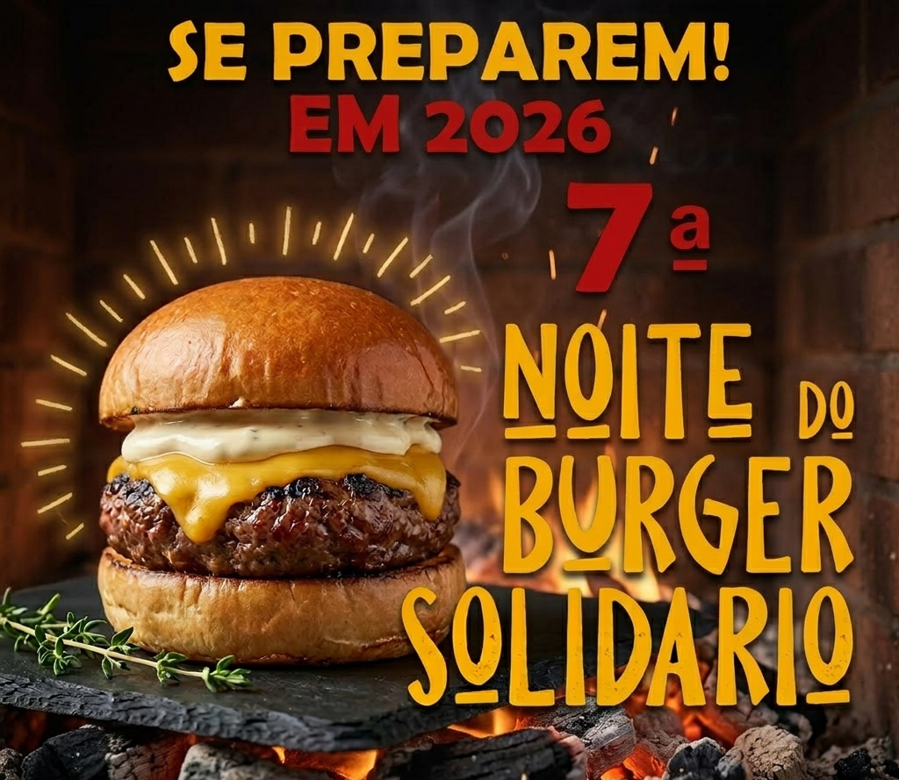
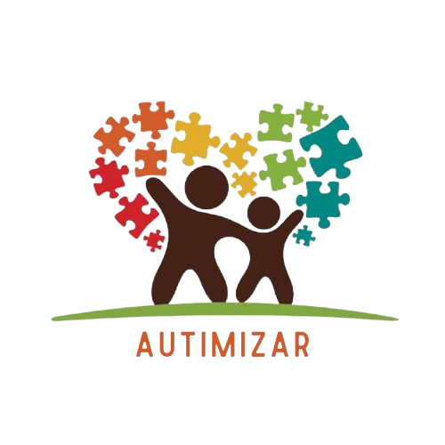

7ª Noite do Burger Solidário
Mais de R$52 mil
distribuídos na edição passada
Evento em expansão
meta de fazer uma edição ainda maior em 2026
Patrocínio com propósito
marca presente em uma ação social de verdade
Patrocínios abertos para 2026
Instituições 2026 confirmadas
Uma edição maior começa agora.
Em 2025, a nossa corrente do bem distribuiu mais de R$52 mil para instituições beneficiadas. Em 2026, as instituições já estão confirmadas: ONG Autimizar e Instituto Alicerce — causas reais que dependem do apoio do seu patrocínio.
A ONG Autimizar atende 90 pessoas com deficiência em extrema vulnerabilidade. O Instituto Alicerce mantém 9 creches com mais de 840 crianças em Londrina. Ao patrocinar a 7ª Noite do Burger Solidário, sua empresa contribui diretamente para essas duas causas — com visibilidade, reputação local e associação a um evento que cresce a cada ano.
Edição 2026

7ª Noite do Burger Solidário
Uma nova edição em construção para ir além do impacto social do ano passado.
Crescimento do evento
A trajetória da Noite do Burger Solidário desde 2023.
O histórico mostra uma evolução consistente de arrecadação entre 2023 e 2025. Em 2026, a nova edição entra em captação com a proposta de superar esse patamar e ampliar o impacto social do projeto.
De 2023 a 2025, o valor arrecadado praticamente dobrou, reforçando a expansão do evento e a confiança construída com patrocinadores, apoiadores e público.
2023
R$27.660,00
2024
R$35.760,21
2025
R$52.756,59
Clima do evento
Uma noite feita para mobilizar pessoas, empresas e comunidade.
Por que patrocinar este ano
Patrocinar a 7ª Noite do Burger Solidário é investir em impacto social, reputação e presença local.
Impacto comprovado
Não se trata de uma promessa abstrata. A edição passada entregou mais de R$52 mil para instituições beneficiadas. Em 2026, os recursos vão direto para a ONG Autimizar — que atende 90 pessoas autistas em vulnerabilidade — e para o Instituto Alicerce — que mantém 9 creches comunitárias em Londrina. Ao apoiar a nova edição, sua empresa participa de algo que já demonstrou capacidade real de gerar resultado.
Marca conectada a uma causa séria
Hoje, empresas que geram confiança são aquelas que mostram compromisso com a comunidade onde atuam. Estar ao lado da Noite do Burger Solidário coloca sua marca em um ambiente de credibilidade, solidariedade e proximidade com o público local. É uma associação espontânea entre visibilidade e propósito.
Participação em uma edição maior
Em 2026 queremos fazer um evento ainda maior do que o do ano passado. Isso significa ampliar alcance, fortalecer mobilização e construir uma experiência ainda mais relevante para patrocinadores, apoiadores e participantes. Quem entra agora não apenas apoia, mas ajuda a moldar uma edição em crescimento.
Visibilidade com memória positiva
Diferente de uma exposição publicitária fria, aqui sua marca aparece dentro de uma narrativa que as pessoas lembram com carinho: união, solidariedade, participação e entrega. Esse tipo de lembrança gera valor emocional, reforça reputação e aproxima sua empresa de clientes e parceiros de forma mais autêntica.
Relacionamento e presença na comunidade
Patrocinar a Noite do Burger Solidário também é estar presente em uma rede de relacionamento local formada por organizadores, apoiadores, voluntários, famílias e empresas com visão semelhante. É uma oportunidade de fortalecer conexões, ampliar reconhecimento e estar ao lado de quem acredita em construir algo relevante para a cidade.
Convite para construir junto
Esta não é apenas uma chamada para colocar uma marca em um material. É um convite para participar da construção de uma nova edição desde o início, com diálogo direto, proximidade com a organização e a possibilidade de apoiar uma ação que cresce a cada ano. Se sua empresa quer fazer parte de algo maior, este é o momento certo.
Próximo passo
Entre em contato e receba informações sobre patrocínio.
Para quem é esta oportunidade
Empresas locais, marcas regionais, parceiros institucionais e apoiadores que desejam unir presença de marca com participação em uma iniciativa social respeitada e em expansão. Nesta edição, os recursos beneficiam diretamente a ONG Autimizar e o Instituto Alicerce — duas causas que atuam com crianças e pessoas autistas em Londrina.
O que conversar conosco
Formatos de apoio, presença da marca, possibilidades de parceria e detalhes sobre como participar da construção da edição de 2026 desde agora.
Contato para informações sobre patrocínios
Falar agora no WhatsApp
Entre em contato
Tire dúvidas sobre o evento, patrocínio ou formas de ajudar.
Use o formulário para falar diretamente com a equipe da Noite do Burger Solidário. Se você quer saber mais sobre o evento, conversar sobre patrocínios, oferecer apoio ou esclarecer qualquer dúvida, este é o canal certo.
- Informações sobre o evento, novidades e próximos passos da edição de 2026.
- Patrocínios, parcerias, apoio institucional e presença de marca.
- Como ajudar, colaborar com a organização ou tirar dúvidas gerais.
Falar com a equipe no WhatsApp
Se o envio do formulário falhar, o WhatsApp continua disponível para contato imediato.
Instituições Beneficiadas 2026
Quem sua empresa vai ajudar em 2026.
A 7ª Noite do Burger Solidário já tem as instituições confirmadas. Seu patrocínio vai direto para causas reais — crianças em vulnerabilidade e famílias com pessoas autistas em Londrina.

💙 ONG Autimizar
Organização da Sociedade Civil · Londrina, PR
A Autimizar é uma organização dedicada à inclusão de pessoas com Transtorno do Espectro Autista (TEA) em situação de vulnerabilidade social. Atualmente atende 90 pessoas com deficiências em extrema vulnerabilidade — com terapias, alimentação e acolhimento integral.
🧩 Como a ONG atua
A Autimizar oferece psicoterapia ABA e psicoterapia individual para adolescentes e adultos autistas na modalidade de sessão social. Além do suporte terapêutico, distribui cestas básicas mensalmente, leite semanalmente e frutas, verduras e legumes semanalmente para famílias em vulnerabilidade.
🌍 Impacto social
Com foco em informação, acolhimento e criação de oportunidades, a Autimizar trabalha para sensibilizar a comunidade sobre inclusão e respeito às diferenças. Acredita que a transformação social acontece pela cooperação entre diferentes setores — é exatamente aí que o seu patrocínio faz diferença.
📡 Redes sociais e contato
📞 (43) 99111-6906 · ✉️ autimizar21@gmail.com

🌱 Instituto Alicerce
Educação Infantil e Inclusão Social · Londrina, PR
O Instituto Alicerce mantém creches comunitárias em Londrina, promovendo educação infantil de qualidade para crianças em situação de vulnerabilidade. São 9 unidades com proposta pedagógica que estimula o protagonismo das crianças por meio de capoeira, música, dança, literatura e meio ambiente.
🏫 Unidades atendidas em Londrina
CEI Gov. José Richa — R. Garça Real, 98, Cj. Violin · 60 crianças
CEI Alicerce — R. Severino Santini, 450, Cj. Semíramis · 96 crianças
CEI Guiomar Moreira — R. José Martins de Oliveira, 255, Mister Thomas · 73 crianças
CEI Ana Proveller — R. do Pelicano, 53, Jd. Paraíso · 83 crianças
CEI Dom Albano Cavallin — R. Arcindo Sardo, 1272, Jd. Coliseu · 148 crianças
CEI Cardeal Dom Geraldo — R. Goiás, 581, Centro · 90 crianças
CEI Alaíde Fausto de Souza — R. Capiberibe, 63, Vila Nova · 92 crianças
CEI Alaíde Fausto – UEL — R. Ipê Rosa, s/n, Campus UEL · 109 crianças
CEI Padre Domingos Rovedatti — R. Amianto, 45, Jd. Ideal · 95 crianças
🎯 Missão
Inspirar uma nova cultura coletiva nas práticas educativas e na inclusão social para o fortalecimento da cidadania e melhoria da qualidade de vida da população.
Essas são as causas que contam com o apoio do seu patrocínio.
Ao patrocinar a 7ª Noite do Burger Solidário, sua empresa contribui diretamente para crianças em vulnerabilidade e para famílias que dependem de terapias e alimentação. O impacto é real, mensurável e conectado à comunidade onde você atua.
Patrocínio aberto — 2026
Seu patrocínio transforma essas histórias em realidade.
A ONG Autimizar precisa de recursos para continuar levando terapias e alimentação a 90 pessoas autistas em situação de vulnerabilidade. O Instituto Alicerce mantém creches que representam a única opção educacional para centenas de crianças de famílias sem renda em Londrina. Em 2026, a Noite do Burger Solidário quer ampliar esse impacto — e precisa de empresas que queiram fazer parte dessa transformação.
Falar diretamente: (43) 99120-5772 no WhatsApp
Quer navegar pela trajetória completa do projeto?
As páginas históricas agora estão separadas por tema para facilitar a consulta: resultado de 2025, registro de 2024, edição de 2023 e a história da Noite do Burger Solidário.